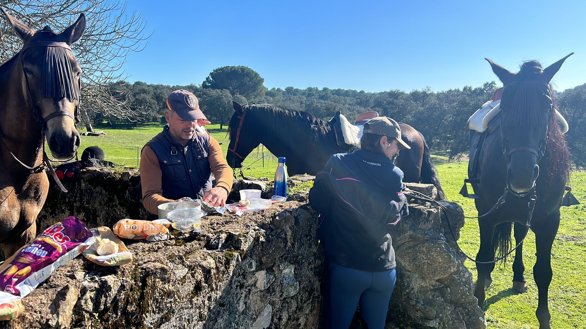

Por los caminos de la sierra de Córdoba.
Salir a caballo entre encinas, con la sierra de Córdoba delante y sin más ruido que el de los cascos. Rutas guiadas por los caminos que recorremos todos los días, con nuestros propios caballos y acompañados en todo momento.
Para cualquier nivel. No hace falta saber montar: a cada jinete se le asigna un caballo acorde con su nivel, y de eso nos encargamos nosotros. Con los nuestros no hay sorpresas, porque los conocemos uno a uno y sabemos cuál va bien con quién.

Escríbenos sin compromiso. Estaremos encantados de enseñarte la yeguada.